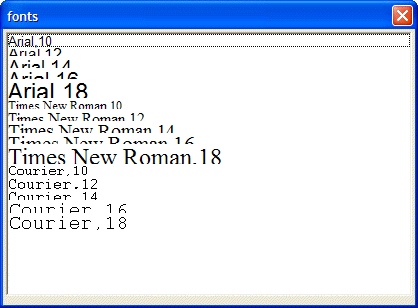

Deriving the Font to Use Dynamically
The following example demonstrates some additional aspects of owner-draw strings. This example displays a list of font names. The entries in the list box are each displayed in the font specified by the entry name.
|
Arial,10 Arial,12 Arial,14 Arial,16 Arial,18 Times New Roman,10 Times New Roman,12 Times New Roman,14 Times New Roman,16 Times New Roman,18 Courier,10 Courier,12 Courier,14 Courier,16 Courier,18 %str% ui_dlg_box("fonts",<<%dlg% [%O={F=@1}{J=CL}{@1}%.80,20font^#fonts]; %dlg%) |
This script produces the following dialog:

Lesson 14: Multiple Fonts in a List Box
The font directive in the owner draw list box is {F=@1}. This indicates that the font name is equal to @1, which means it is equal to the input text, starting in the first position of the input text, through the end of the input text.
As another example, you could have an input array with values like: John:Arial,12,Bold.
The font directive, in this case, would be: {F=@$(:)+1}. The complete owner draw string would be: O={F=@$(:)+1}{@1,$(:)-1}
In the above example, the portion of the owner draw string '{@1,$(:)-1}' causes the text "John" to be displayed using the font Arial,12,Bold
As you can see, there is a problem with the way this list box looks because as the font size grows, each row takes up more vertical space, and it begins to overlap the row above it. To fix this, you need to specify dynamic row height in the list box.
Next
Dynamically Sizing List Box Row Height
Supported By
Alpha Five Version 5 and Above
Limitations
Desktop applications only.